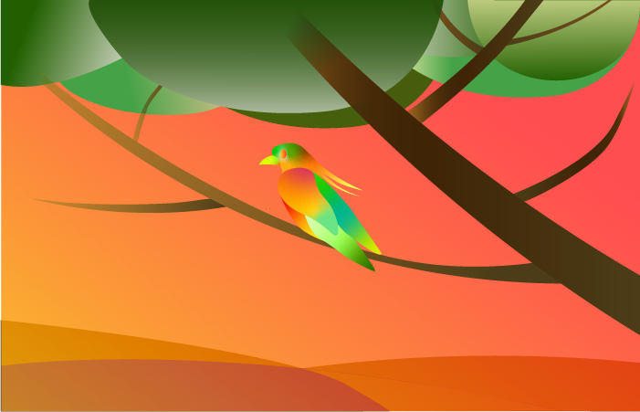
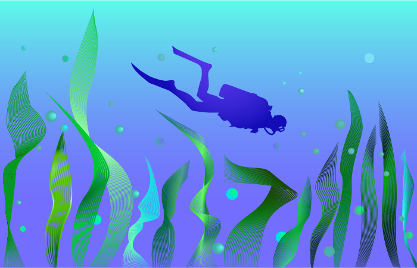

December 1, 2019
Project 3: Timeline

My timeline is about the brief history of hoodie. I break my topic up into six separate periods. Every period has different meaning in hoodie. From a long time ago mons wear hoodies to today's businessmen wear hoodies. Hoodie culture in constant development. My timeline applied images to introduce how the hoodie culture was formed and the people who wore hoodies at each stage.
November 1, 2019
Project 3: Article Illustrations
Nat Geo's world walker maps every time police stop him
Why Birds Matter, and Are Worth Protecting


I picked the article from the National Geographic. Basically, these three articles were about the landscapes and traveling. I tried to combined my illustrations with the animation, and focused on the different gradient color. I used Illustrator mostly, and applied the linear gradient tool, radial gradient tool and freeform gradient tool in the illustrator.
October 2, 2019
Project 2: Scalable Personal Icon

For this project, I need to develop a suite of three icons that represent myself. The three personal icons I designed are Majhong, my right hand plamar crease and Zen buddhism. My design concept is to make the three icons look unified and simple. Majhong is a fun game, originated in China. All my family members play Mahjong during the festival, So influenced by them, it has become my favorite board game. The second icon is my right plam. I think the single transverse plamar crease is very special to me. For my third one icon, I design a lotus flower floating on the water, and a drop of water in the middle of the lotus.
September 4, 2019
Project 1: Isometric Attendance Avatar

For my first project, I design an avatar that represents myself.